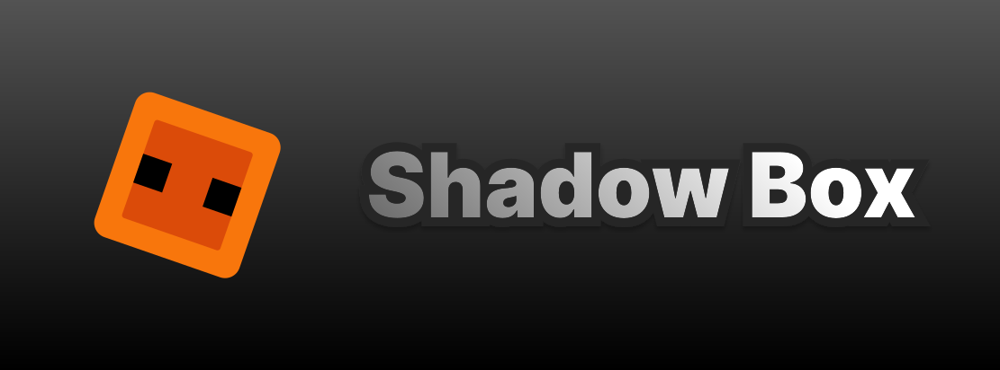

It started with phones.
I was interested in devices long before I had a plan for what to build.

My story
I was interested in devices long before I had a plan for what to build.
I made my own cardboard phone and kept thinking about what devices could be.

BA
I came up with BA when I was eight. Today it is where my brightest ideas live.


A product idea became a prototype I could explain, test, and keep improving.
I have more ideas than I build.
I try to choose the ones that solve something real or make something meaningfully better. The best moment is when an idea finally works.
A phone-connected display for kayaking, biking, travel, and active use.

A macOS utility that makes repeated video work faster and less manual.

A puzzle-platformer about light, shadow, and collecting stars.
The identity behind my brightest ideas and what I want to build next.

Ideas, experiments, reviews, and the process behind what I build.
What BA means
BA brings together the software, devices, and product ideas I believe should exist—and gives me a place to make them real.
The story of BA